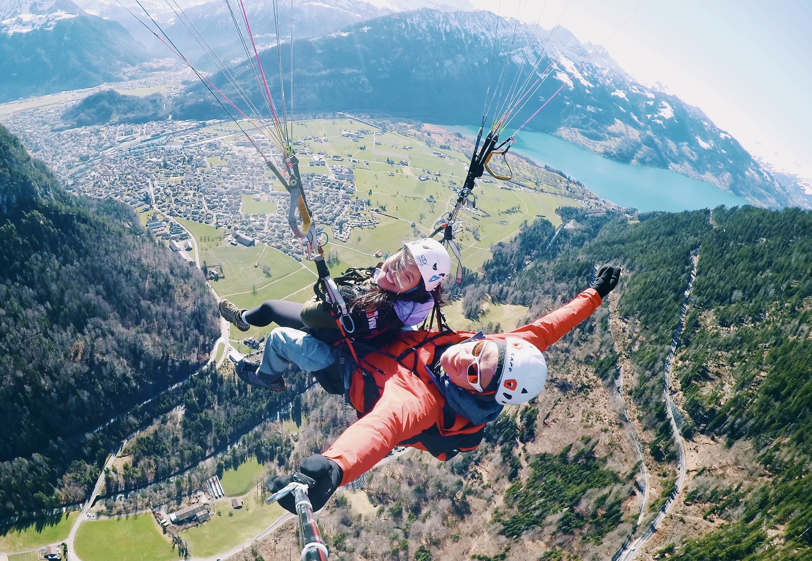

Get to Know Me!
Hi, I'm Michelle– a 22 year old college student, adventure seeker, and food enthusiast! I'm lucky to call both Boston, where I grew up, and Ann Arbor, where I currently attend university, my home. As an Asian American, I have always been surrounded by 2 sets of languages, traditions, and cuisines. My cross-culture upbringing has only fueled a growing desire to explore all of the beautiful cultures of the world. So far, I have visited 20 countries and hope to continue crossing places off my bucket list!
I've been fortunate enough to come from a family that shares a passion for travel. Before the age of 2, I had gotten on my first plane and embarked on a 13 hour flight to China. Ever since then, the airport has always been one of my favorite places because it signifies the start of a new journey. My ultimate life goal is to visit all 7 continents, and so far, I have 3 down and 4 to go!
One of the many factors underlying my wanderlust is my love for language. I found myself taking a great interest in the art of language at a young age, which I largely attribute to my bilingualism in English and Mandarin. The significant role that language plays in bringing people together and shaping the culture of particular social groups is fascinating, and ultimately, that fascination led me to pursue French as a third language. After studying French for 10 years, I had learned all of the vocab words and verb tenses that I could possibly think of, but my conversational skills still lacked. Thus, I chose to study abroad and live among the locals in the South of France for a semester with the goal of becoming fluent in the language– and it worked!
I could not be more grateful for all of the new people I met, places I visited, and life-changing experiences I had during my semester abroad. Moving to a foreign country and traveling alone for the first time gave me the opportunity to reflect, learn more about myself, and grow as a person. I often found myself in situations where I felt out of my comfort zone, but in the end, I came out more confident and independent. After my study abroad experience was unfortunately cut short due to COVID-19, I have only been able to think about where my next trip will take me!
